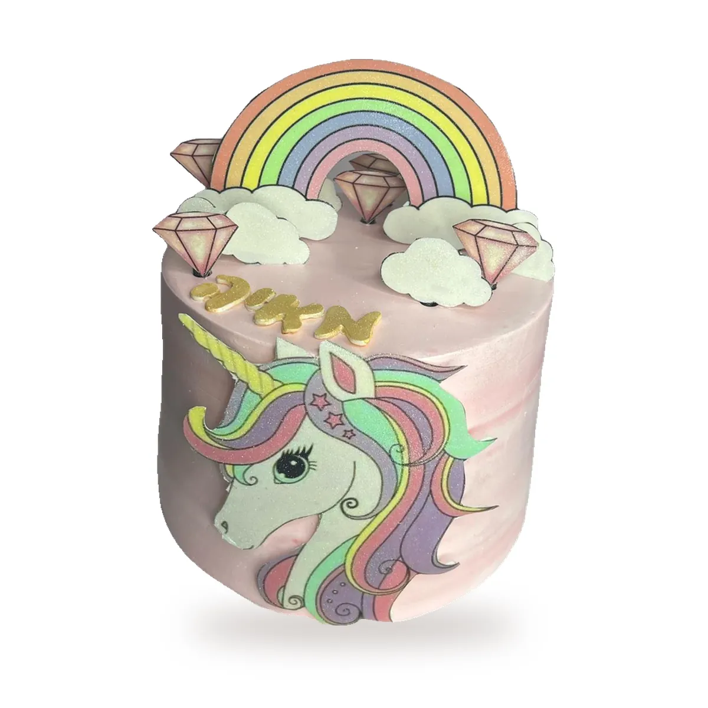
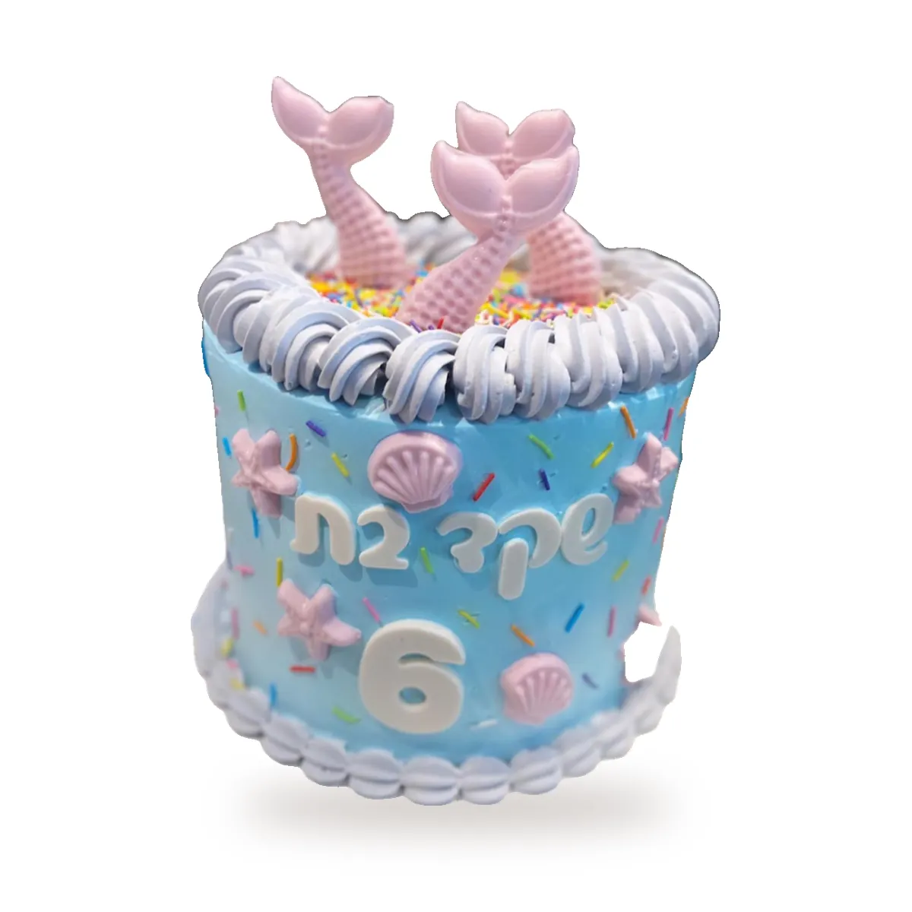
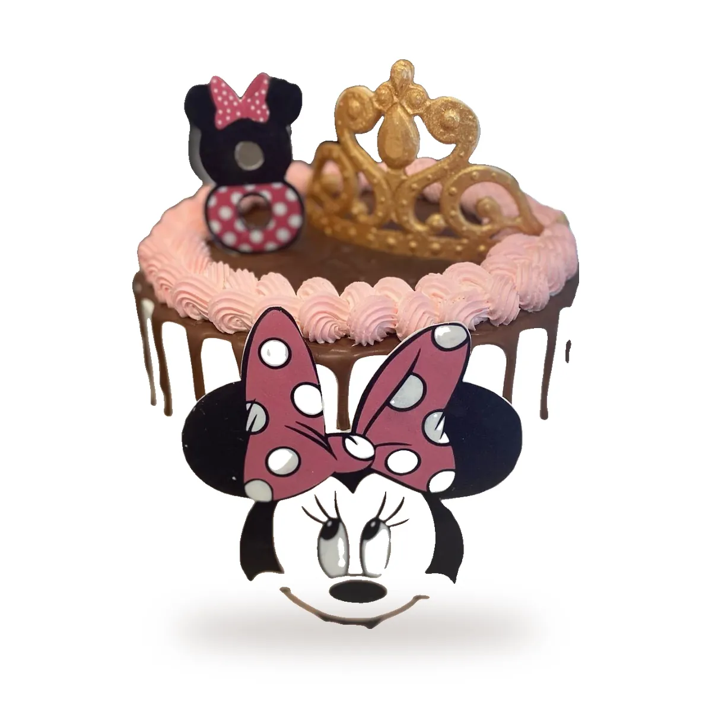
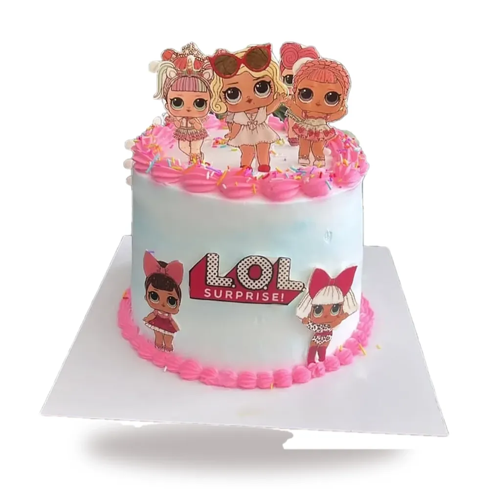
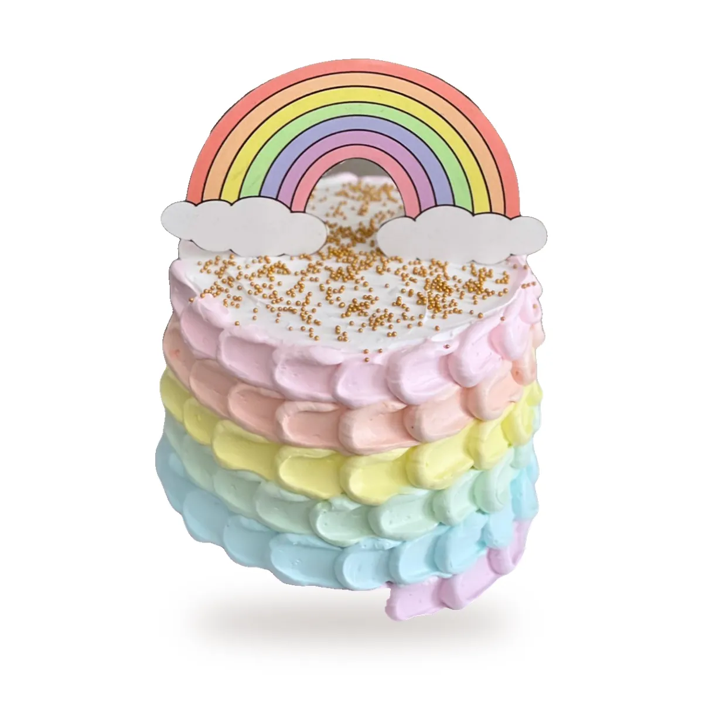

מאת יהלי זיני
הדרך הכי קלה למצוא רעיון לעוגה היא להתחיל ממה שהיא אוהבת עכשיו: דמות, תחביב, צבע או סגנון. משם בוחרים סוג עוגה, צבעים וכיתוב.






רעיונות לפי גיל
- גיל שנה עד שלוש: עוגה בצבעי פסטל עם המספר בגדול, או דמות אהובה. כאן ההורים בוחרים, אז כדאי לבחור משהו שיפה בתמונות.
- גן ובית ספר יסודי: חד קרן, קשת בענן, בת ים, מיני מאוס, LOL Surprise. דמויות וצבעים חזקים.
- גיל עשר ומעלה: עוגת וינטג׳ עם זילופים ושם, עוגה בנושא איפור, או עוגת דריפ עם סופגניות ומקרונים.
- בת מצווה: עוגה גבוהה או דו־קומתית, לבנה או ורודה, עם פרחים, כתר או מספר מוזהב.
צבעים שעובדים
- ורוד וינטג׳: ורוד עדין עם זילופים ופנינים. נראה נהדר כמעט בכל גיל.
- פסטל: ורוד, תכלת, סגול וצהוב רכים, מתאים במיוחד לחד קרן ולקשת בענן.
- לבן וזהב: אלגנטי, מתאים לבנות מצווה ולגילאים גדולים יותר.
- צבעי הדמות: כשיש דמות אהובה, הצבעים שלה מכתיבים את העוגה.
מה לכתוב על העוגה
- שם ומספר: "נועה 7"
- ברכה: "מזל טוב", "Happy Birthday"
- משפט קצר שהיא אוהבת, או כינוי מהבית
על עוגה קטנה כדאי משפט קצר. על עוגה גדולה יש יותר מקום לשם, למספר ולברכה.
איזה סוג עוגה לבחור
- עוגה מעוצבת לכל העיצובים עם דמויות, זילופים וקומות.
- עוגת מספרים כשרוצים שהגיל יהיה הכוכב.
- עוגת בנטו לחגיגה קטנה או כמתנה אישית.
יש לכם רעיון משלכם? בטופס ההזמנה אפשר לתאר את העיצוב ולצרף תמונה של עוגה שאהבתם. עוד עשרות רעיונות בעמוד העבודות שלי.